| 1 | 2 | 3 | 4 | 5 | 6 | 7 | 8 | 9 | 10 | |
|---|---|---|---|---|---|---|---|---|---|---|
| x | 65 | 43 | 44 | 59 | 60 | 50 | 52 | 38 | 42 | 40 |
| Y | 12 | 32 | 36 | 18 | 17 | 20 | 21 | 40 | 30 | 24 |
2 Régression linéaire simple
2.1 Petit jeu de données pour une régression linéaire simple
Considérer les données suivantes et le modèle de régression linéaire \(Y_i = \beta_0 + \beta_1 x_i + \varepsilon_i\) :
a) Placer les points ci-dessus sur un graphique.
b) Calculer les équations de score.
c) Calculer les estimateurs \(\hat{\beta}_0\) et \(\hat{\beta}_1\) en résolvant le système d’équations obtenu en b).
d) Calculer les prévisions \(\hat{Y}_i\) correspondant à \(x_i\) pour \(i = 1, \dots, n\). Ajouter la droite de régression au graphique fait en a).
e) Vérifier empiriquement que \(\sum_{i=1}^{10} \hat{\varepsilon}_i = 0\).
NoteÉléments de réponse
a) \(\hat{\beta}_0=66.44882\) et \(\hat{\beta}_1=-0.8407468\)
b) \(\hat{Y}_1 = 11,80, \hat{Y}_2 = 30,30, \hat{Y}_3 = 29,46, \hat{Y}_4 = 16,84, \hat{Y}_5 = 16,00, \hat{Y}_6 = 24,41, \hat{Y}_7 = 22,73, \hat{Y}_8 = 34,50, \hat{Y}_9 = 31,14, \hat{Y}_{10} = 32,82\)
AstuceSolution complète
a) Voir la figure 2.1. Remarquer que l’on peut, dans la fonction plot, utiliser une formule pour exprimer la relation entre les variables.
Code
x<-c(65, 43, 44, 59, 60, 50, 52, 38, 42, 40)
y<-c(12, 32, 36, 18, 17, 20, 21, 40, 30, 24)
plot(y ~ x, pch = 16)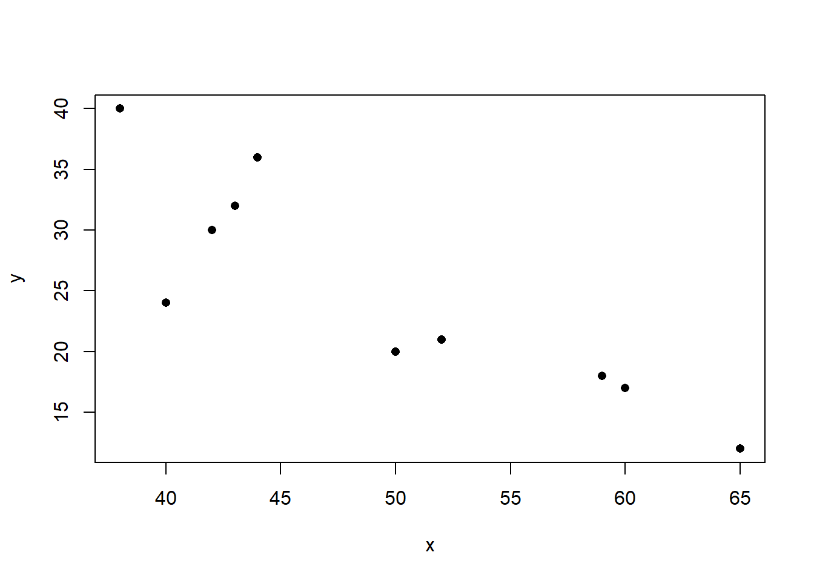
b) Les équations normales sont les équations à résoudre pour trouver les estimateurs de \(\beta_0\) et \(\beta_1\) minimisant la somme des carrés \[ \begin{aligned} S(\beta_0, \beta_1) &=\sum_{i = 1}^n \varepsilon^2_i \\ &=\sum_{i = 1}^n \left(Y_i-\beta_0-\beta_1x_i\right)^2. \end{aligned} \] Or, \[ \begin{aligned} \frac{\partial S}{\partial \beta_0} &= -2 \sum_{i=1}^n (Y_i - \beta_0 - \beta_1 x_i) \\ \frac{\partial S}{\partial \beta_1} &= -2 \sum_{i=1}^n (Y_i - \beta_0 - \beta_1 x_i) x_i, \end{aligned} \] d’où les équations normales sont \[ \begin{aligned} \sum_{i=1}^n (Y_i - \hat{\beta}_0 - \hat{\beta}_1 x_i) &= 0 \\ \sum_{i=1}^n (Y_i - \hat{\beta}_0 - \hat{\beta}_1 x_i) x_i &= 0. \end{aligned} \]
c) Par la première des deux équations normales, on trouve \[ \sum_{i=1}^nY_i-n\hat{\beta}_0-\hat{\beta}_1\sum_{i=1}^nx_i = 0, \] soit, en isolant \(\hat{\beta}_0\), \[ \hat{\beta}_0=\frac{\sum_{i=1}^nY_i-\hat{\beta}_1\sum_{i=1}^nx_i}{n}=\bar{Y}-\hat{\beta}_1\bar{x}. \]
De la seconde équation normale, on obtient \[ \sum_{i=1}^n x_i Y_i - \hat{\beta}_0 \sum_{i=1}^n x_i - \hat{\beta}_1 \sum_{i=1}^n x_i^2 = 0 \] puis, en remplaçant \(\hat{\beta}_0\) par la valeur obtenue ci-dessus, \[ \hat{\beta}_1 \left( \sum_{i=1}^n x_i^2 - n \bar{x}^2 \right) = \sum_{i=1}^n x_i Y_i - n \bar{x} \bar{Y}. \] Par conséquent,
\[ \begin{aligned} \hat{\beta}_1 &= \frac{\sum_{i=1}^n x_i Y_i - n \bar{x}\bar{Y}}{\sum_{i=1}^n x_i^2 - n \bar{x}^2} \\ &= \frac{11654 - (10)(49,3)(25)}{25103 - (10)(49,3)^2} \\ &= -0,8407 \\ \end{aligned} \]
et
\[ \begin{aligned} \hat{\beta}_0 &=\bar{Y}-\hat{\beta}_1\bar{x}\\ &=25 - (-0,8407)(49,3)\\ &=66,4488. \end{aligned} \]
d) On peut calculer les prévisions correspondant à \(x_1, \dots, x_{10}\) — ou valeurs ajustées — à partir de la relation \(\hat{Y}_i = 66,4488 - 0,8407 x_i\), \(i = 1, 2, \dots, 10\). Avec R, on crée un objet de type modèle de régression avec lm et on en extrait les valeurs ajustées avec fitted :
Code
fit <- lm(y ~ x)
fitted(fit) 1 2 3 4 5 6 7 8
11.80028 30.29670 29.45596 16.84476 16.00401 24.41148 22.72998 34.50044
9 10
31.13745 32.81894 Pour ajouter la droite de régression au graphique de la figure 2.1, il suffit d’utiliser la fonction abline avec en argument l’objet créé avec lm. L’ordonnée à l’origine et la pente de la droite seront extraites automatiquement. Voir la figure 2.2.
Code
abline(fit)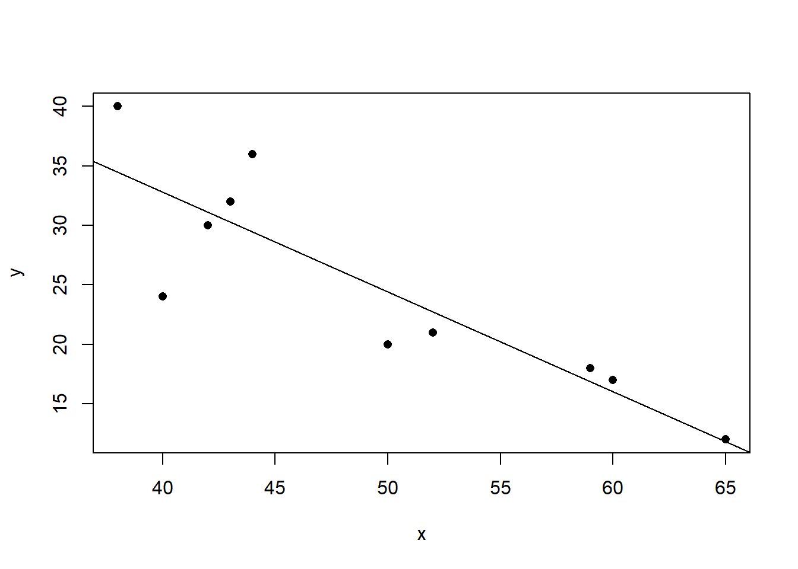
e) Les résidus de la régression sont \(\hat{\varepsilon}_i = Y_i - \hat{Y}_i\), \(i = 1, \dots, 10\). Dans R, la fonction residuals extrait les résidus du modèle :
Code
residuals(fit) 1 2 3 4 5 6 7
0.1997243 1.7032953 6.5440421 1.1552437 0.9959905 -4.4114773 -1.7299837
8 9 10
5.4995615 -1.1374514 -8.8189450 On vérifie ensuite que la somme des résidus est (essentiellement) nulle :
Code
sum(residuals(fit)) [1] -4.440892e-162.2 Estimateurs des moindres carrés pour la régression linéaire simple
Considérer le modèle de régression linéaire par rapport au temps \(Y_t = \beta_0 + \beta_1 t + \varepsilon_t\), pour \(t = 1, \dots, n\). Écrire les équations de score et obtenir les estimateurs des moindres carrés des paramètres \(\beta_0\) et \(\beta_1\).
Note : \(\sum_{i=1}^n i^2 = n(n + 1)(2n + 1)/6\).
NoteÉléments de réponse
\(\hat{\beta}_0 = \bar{Y} - \hat{\beta}_1 (n + 1)/2\), et \(\hat{\beta}_1 = \{12 \sum_{t = 1}^n t Y_t - 6 n (n + 1) \bar{Y}\}/\{n (n^2 - 1)\}\)
AstuceSolution complète
On a un modèle de régression linéaire simple usuel avec \(x_t = t\). Les estimateurs des moindres carrés des paramètres \(\beta_0\) et \(\beta_1\) sont donc
\[ \begin{aligned} \hat{\beta}_0 &= \bar{Y} - \hat{\beta}_1 \frac{\sum_{t = 1}^n t}{n} \\ \end{aligned} \]
et
\[ \begin{aligned} \hat{\beta}_1 &= \frac{\sum_{t = 1}^n t Y_t - \bar{Y} \sum_{t = 1}^n t}{\sum_{t = 1}^n t^2 - n^{-1} (\sum_{t = 1}^n t)^2}. \end{aligned} \]
Or, puisque \(\sum_{t = 1}^n t = n(n + 1)/2\) et \(\sum_{t = 1}^n t^2= n(n + 1)(2n + 1)/6\), les expressions ci-dessus se simplifient en \[ \begin{aligned} \hat{\beta}_0 & = \bar{Y} - \hat{\beta}_1 \frac{n + 1}{2} \\ \end{aligned} \]
et
\[ \begin{aligned} \hat{\beta}_1 & = \frac{\sum_{t=1}^n t Y_t - n(n + 1) \bar{Y}/2}{n(n + 1)(2n + 1)/6 - n(n + 1)^2/4} \\ & = \frac{12 \sum_{t=1}^n t Y_t - 6 n (n + 1) \bar{Y}}{n (n^2 - 1)}. \end{aligned} \]
2.3 Estimateurs des moindres carrés pour la régression linéaire passant par l’origine
a) Trouver l’estimateur des moindres carrés du paramètre \(\beta\) dans le modèle de régression linéaire passant par l’origine \(Y_i = \beta x_i + \varepsilon_i\), \(i = 1, \dots, n\), sous les postulats \(\esp{\varepsilon_i} = 0\), et \(\cov{\varepsilon_i, \varepsilon_j} = \mathbf{1}(i=j) \sigma^2\).
b) Démontrer que l’estimateur en a) est sans biais.
c) Calculer la variance de l’estimateur en a).
NoteÉléments de réponse
a) \(\hat{\beta}= \sum_{i = 1}^n x_i Y_i/\sum_{i = 1}^n x_i^2\)
b) \(\var{\hat{\beta}} = \sigma^2/\sum_{i = 1}^n x_i^2\)
AstuceSolution complète
a) L’estimateur des moindres carrés du paramètre \(\beta\) est la valeur \(\hat{\beta}\) minimisant la somme de carrés \[ \begin{aligned} S(\beta) &=\sum_{i = 1}^n \varepsilon_i^2 \\ &=\sum_{i = 1}^n (Y_i - \beta x_i)^2. \end{aligned} \]
Or, \[ \frac{d}{d \beta} S(\beta) = -2 \sum_{i = 1}^n (Y_i - \hat{\beta} x_i) x_i, \] d’où l’unique équation normale de ce modèle est \[ \sum_{i = 1}^n x_i Y_i - \hat{\beta} \sum_{i=1}^n x_i^2 = 0. \]
L’estimateur des moindres carrés de \(\beta\) est donc \[ \hat{\beta} = \frac{\sum_{i=1}^n x_i Y_i}{\sum_{i=1}^n x_i^2}. \]
b) On doit démontrer que \(\esp{\hat{\beta}} = \beta\). On a
\[ \begin{aligned} \esp{\hat{\beta}} &= \Esp{\frac{\sum_{i=1}^n x_i Y_i}{\sum_{i=1}^n x_i^2}} \\ &= \frac{1}{\sum_{i=1}^n x_i^2} \sum_{i=1}^n x_i \esp{Y_i} \\ &= \frac{1}{\sum_{i=1}^nx_i^2} \sum_{i=1}^n x_i \beta x_i \\ &= \beta \frac{\sum_{i=1}^n x_i^2}{\sum_{i=1}^n x_i^2} \\ &= \beta. \end{aligned} \]
c) Des hypothèses du modèle, on a \[ \begin{aligned} \var{\hat{\beta}} &= \Var{\frac{\sum_{i=1}^n x_i Y_i}{\sum_{i=1}^n x_i^2}} \\ &= \frac{1}{(\sum_{i=1}^n x_i^2)^2} \sum_{i=1}^n x_i^2 \var{Y_i} \\ &= \frac{\sigma^2}{(\sum_{i=1}^n x_i^2)^2} \sum_{i=1}^n x_i^2 \\ &= \frac{\sigma^2}{\sum_{i=1}^n x_i^2}. \end{aligned} \]
2.4 Effet du sexe sur l’espérance de vie
On s’intéresse à l’effet du sexe sur l’espérance de vie. On connaît les durées de vie de \(n_{F}=300\) femmes et \(n_H=200\) hommes. On choisit d’utiliser la variable indicatrice
\[ x_{i}=\left\{ \begin{array}{ll} 0 & \text{, si \texttt{SEXE}}_i=\texttt{H}\\ 1 & \text{, si \texttt{SEXE}}_i=\texttt{F}\\ \end{array}\right. . \]
On note \(\bar{Y}_F\) la moyenne des durées de vie des femmes et \(\bar{Y}_H\) la moyenne des durées de vie des hommes.
a) Montrer que l’estimateur des moindres carrés \(\hat{\beta}_1\) (lié à la variable explicative \(x\)) est égal à \(\bar{Y}_F-\bar{Y}_H\).
Indice : On peut exprimer \(\bar{Y}\) en termes de \(\bar{Y}_F\) et \(\bar{Y}_H\).
b) Ce résultat permet-il d’interpréter le coefficient relié à une variable catégorique binaire? Expliquer.
c) Que représente \(\hat{\beta}_0\) dans ce cas?
AstuceSolution complète
a) On a
\[ \bar{Y}=\frac{\sum_{i=1}^{500}Y_i}{500}=\frac{300\bar{Y}_F+200\bar{Y}_H}{500}. \]
Aussi,
\[
\hat{\beta}_1=\frac{S_{xy}}{S_{xx}}=\frac{\sum_{i=1}^{500}x_iY_i-500\bar{x}\bar{Y}}{\sum_{i=1}^{500}x_i^2-500\bar{x}^2}.
\]
Or, \[
\begin{aligned} \bar{x}&=\frac{\sum_{i=1}^{500}x_i}{500}=\frac{300}{500},\\ \sum_{i=1}^{500}x_i^2&=300,\\ \sum_{i=1}^{500}x_i Y_i&=300\bar{Y}_F \end{aligned}
\] Donc, \[
\begin{aligned} \hat{\beta}_1&=\frac{300\bar{Y}_F-500\times\frac{300}{500}\times\frac{300\bar{Y}_F+200\bar{Y}_H}{500}}{300-500\left(\frac{300}{500}\right)^2}\\ &=\frac{500\bar{Y}_F-300\bar{Y}_F-200\bar{Y}_H}{500-300}\\ &=\bar{Y}_F-\bar{Y}_H. \end{aligned}
\]
b) Oui, le coefficient relié à la variable indicatrice qui vaut 1 si le sexe est F représente la différence etre la moyenne de l’espérance de vie pour les femmes et la moyenne de l’espérace de vie pour les hommes.
c)
\[
\begin{aligned} \hat{\beta}_0&=\bar{Y}-\hat{\beta}_1\bar{x}=\bar{Y}-(\bar{Y}_F-\bar{Y}_H)\frac{300}{500}=\bar{Y}_H. \end{aligned}
\] \(\Rightarrow \hat{\beta}_0\) est la moyenne de l’espérance de vie pour les hommes.
2.5 Démonstration que l’EMC est le BLUE
Démontrer que l’estimateur des moindres carrés \(\hat{\beta}\) trouvé à l’exercice 2.3 est l’estimateur sans biais à variance (uniformément) minimale du paramètre \(\beta\). En termes mathématiques : \[ \beta^* = \sum_{i=1}^n c_i Y_i \] un estimateur linéaire du paramètre \(\beta\). Démontrer qu’en déterminant les coefficients \(c_1, \dots, c_n\) de façon à minimiser \[ \var{\beta^*} = \Var{\sum_{i=1}^n c_i Y_i} \] sous la contrainte que \[ \esp{\beta^*} = \Esp{\sum_{i=1}^n c_i Y_i} = \beta, \] on obtient \(\beta^* = \hat{\beta}\).
Indice: le lagrangien permet de faire l’optimisation sous contrainte, voir l’annexe D des notes de cours.
AstuceSolution complète
On veut trouver les coefficients \(c_1, \dots, c_n\) tels que \(\esp{\beta^*} = \beta\) et \(\var{\beta^*}\) est minimale. On cherche donc à minimiser la fonction
\[ \begin{aligned} f(c_1, \dots, c_n) &= \var{\beta^*} \\ &= \sum_{i=1}^n c_i^2 \var{Y_i} \\ &= \sigma^2 \sum_{i=1}^n c_i^2 \end{aligned} \] sous la contrainte \(\esp{\beta^*} = \sum_{i=1}^nc_i\esp{Y_i} = \sum_{i=1}^nc_i\beta x_i = \beta\sum_{i=1}^nc_ix_i = \beta\), soit \(\sum_{i=1}^n c_i x_i = 1\) ou \(g(c_1, \dots, c_n) = 0\) avec \[ g(c_1, \dots, c_n) = \sum_{i=1}^n c_i x_i - 1. \]
Pour utiliser la méthode des multiplicateurs de Lagrange, on pose \[ \begin{aligned} \mathcal{L}(c_1, \dots, c_n,\lambda) &= f(c_1, \dots, c_n) - \lambda g(c_1, \dots, c_n), \\ &= \sigma^2 \sum_{i=1}^n c_i^2 - \lambda \left( \sum_{i=1}^n c_i x_i - 1 \right), \end{aligned} \] puis on dérive la fonction \(\mathcal{L}\) par rapport à chacune des variables \(c_1, \dots, c_n\) et \(\lambda\). On trouve alors \[ \begin{aligned} \frac{\partial \mathcal{L}}{\partial c_u} & = 2 \sigma^2 c_u - \lambda x_u, \quad u = 1, \dots, n \\ \frac{\partial \mathcal{L}}{\partial \lambda} & = - \sum_{i=1}^n c_i x_i + 1. \end{aligned} \] En posant les \(n\) premières dérivées égales à zéro, on obtient \[ c_i = \frac{\lambda x_i}{2 \sigma^2}. \] Or, de la contrainte, \[ \sum_{i=1}^n c_i x_i = \frac{\lambda}{2\sigma^2} \sum_{i=1}^n x_i^2 = 1, \] d’où \[ \frac{\lambda}{2 \sigma^2} = \frac{1}{\sum_{i=1}^n x_i^2} \] et, donc, \[ c_i = \frac{x_i}{\sum_{i=1}^n x_i^2}. \] Finalement, \[ \begin{aligned} \beta^* & = \sum_{i=1}^n c_i Y_i \\ & = \frac{\sum_{i=1}^n x_i Y_i}{\sum_{i=1}^n x_i^2} \\ & = \hat{\beta}. \end{aligned} \]
2.6 Intervalle de confiance pour \(\beta_1\)
Soit le modèle de régression linéaire simple \[ Y_i = \beta_0 + \beta_1 x_i + \varepsilon_i, \quad \varepsilon_i \sim N(0, \sigma^2). \]
Construire un intervalle de confiance de niveau \(1 - \alpha\) pour le paramètre \(\beta_1\) si la variance \(\sigma^2\) est connue.
NoteÉléments de réponse
\(\beta_1 \in \hat{\beta}_1 \pm z_{\alpha/2} \sigma \left\{ \sum_{i=1}^n (x_i - \bar{x})^2 \right\}^{-1/2}\)
AstuceSolution complète
Puisque, selon le modèle, \(\varepsilon_i \sim N(0, \sigma^2)\) et que \(Y_i = \beta_0 + \beta_1 x_i + \varepsilon_i\), alors \(Y_i \sim N(\beta_0 + \beta_1 x_i, \sigma^2)\). De plus, on sait que
\[ \begin{aligned} \hat{\beta}_1 &= \frac{\sum_{i=1}^n (x_i - \bar{x})(Y_i - \bar{Y})}{ \sum_{i=1}^n (x_i - \bar{x})^2} \\ &= \frac{\sum_{i=1}^n (x_i - \bar{x}) Y_i}{ \sum_{i=1}^n (x_i - \bar{x})^2}, \end{aligned} \] donc l’estimateur \(\hat{\beta}_1\) est une combinaison linéaire des variables aléatoires \(Y_1, \dots, Y_n\). Par conséquent, \(\hat{\beta}_1 \sim N(\esp{\hat{\beta}_1}, \var{\hat{\beta}_1})\), où \(\esp{\hat{\beta}_1} = \beta_1\) et \(\var{\hat{\beta}_1} = \sigma^2/S_{xx}\) et, donc, \[ \Pr\left[ -z_{\alpha/2} < \frac{\hat{\beta}_1 - \beta_1}{\sigma/\sqrt{S_{xx}}} <z_{\alpha/2}\right] = 1 - \alpha. \]
Un intervalle de confiance de niveau \(1 - \alpha\) pour le paramètre \(\beta_1\) lorsque la variance \(\sigma^2\) est connue est donc \[ \beta_1 \in \hat{\beta}_1 \pm z_{\alpha/2} \frac{\sigma}{\sqrt{\sum_{i=1}^n (x_i - \bar{x})^2}}. \]
2.7 Relation entre la consommation de gaz naturel et le prix
Vous analysez la relation entre la consommation de gaz naturel per capita et le prix du gaz naturel. Vous avez colligé les données de 20 grandes villes et proposé le modèle \[ Y = \beta_0 + \beta_1 x + \varepsilon, \] où \(Y\) représente la consommation de gaz per capita, \(x\) le prix et \(\varepsilon\) est le terme d’erreur aléatoire distribué selon une loi normale. Vous avez obtenu les résultats suivants :
\[ \begin{aligned} \hat{\beta}_0 &= 138,581 & \sum_{i=1}^{20} (x_i - \bar{x})^2 &= 10668 \\ \hat{\beta}_1 &= -1,104 & \sum_{i=1}^{20} (Y_i - \bar{Y})^2 &= 20838 \\ \sum_{i=1}^{20} x_i^2 &= 90048 & \sum_{i=1}^{20} \hat{\varepsilon}_i^2 &= 7832. \\ \sum_{i=1}^{20} Y_i^2 &= 116058 \end{aligned} \] Trouver le plus petit intervalle de confiance à 95 % pour le paramètre \(\beta_1\).
NoteÉléments de réponse
\((-1,5, -0,7)\)
AstuceSolution complète
L’intervalle de confiance pour \(\beta_1\) est
\[ \begin{aligned} \beta_1 &\in \hat{\beta}_1 \pm t_{\alpha/2}(n - 2) \sqrt{\frac{\hat{\sigma}^2}{S_{xx}}} \\ &\in \hat{\beta}_1 \pm t_{0,025}(20 - 2) \sqrt{\frac{MSE}{S_{xx}}}. \end{aligned} \] On nous donne \(\SST = S_{yy} = 20838\) et \(S_{xx} =10668\). Par conséquent,
\[ \begin{aligned} \SSR &= \hat{\beta}_1^2 \sum_{i=1}^{20} (x_i - \bar{x})^2 \\ &= (-1,104)^2(10668) \\ &=13002,33\\ \SSE &= \SST - \SSR \\ &= 7835,67 \\ \end{aligned} \]
et
\[
\begin{aligned}
\MSE
&= \frac{\SSE}{18} \\
&= 435,315.
\end{aligned}
\] De plus, on trouve dans une table de quantiles de la loi de Student (ou à l’aide de la fonction qt dans R) que \(t_{0,025}(18) = 2,101\). L’intervalle de confiance recherché est donc \[
\begin{aligned}
\beta_1
&\in -1,104 \pm 2,101 \sqrt{\frac{435,315}{10668}} \\
&\in (-1,528, -0,680).
\end{aligned}
\]
2.8 Intervalle de confiance pour la régression linéaire passant par l’origine
Considérer le modèle de régression linéaire passant par l’origine présenté à l’exercice 2.3. Soit \(x_0\) une valeur de la variable indépendante, \(Y_0\) la vraie valeur de la variable indépendante correspondant à \(x_0\) et \(\hat{Y}_0\) la prévision (ou estimation) de \(Y_0\). En supposant que
\(\varepsilon_i \sim N(0, \sigma^2)\);
\(\cov{\varepsilon_0, \varepsilon_i} = 0\) pour tout \(i = 1, \dots, n\);
\(\var{\varepsilon_i} = \sigma^2\) est estimé par \(s^2\),
construire un intervalle de confiance de niveau \(1 - \alpha\) pour \(Y_0\). Faire tous les calculs intermédiaires.
NoteÉléments de réponse
\(\hat{Y}_0 \pm t_{\alpha/2}(n - 1) s\sqrt{1 + x_0^2/\sum_{i=1}^n x_i^2}\)
AstuceSolution complète
Premièrement, selon le modèle de régression passant par l’origine, \(Y_0 = \beta x_0 + \varepsilon_0\) et \(\hat{Y}_0 = \hat{\beta} x_0\). Considérons, pour la suite, la variable aléatoire \(Y_0 - \hat{Y}_0\). On voit facilement que \(\esp{\hat{\beta}} = \beta\), d’où \(\esp{Y_0 - \hat{Y}_0} = \esp{\beta x_0 + \varepsilon_0 - \hat{\beta} x_0} = \beta x_0 - \beta x_0 = 0\) et
\[ \var{Y_0 - \hat{Y}_0} = \var{Y_0} + \var{\hat{Y}_0} - 2\cov{Y_0, \hat{Y}_0}. \] Or, \(\cov{Y_0, \hat{Y}_0} = 0\) par l’hypothèse ii) de l’énoncé, \(\var{Y_0} = \sigma^2\) et \(\var{\hat{Y}_0} =x_0^2\var{\hat{\beta}}\). De plus,
\[ \begin{aligned} \var{\hat{\beta}} &= \frac{1}{(\sum_{i=1}^n x_i^2)^2} \sum_{i=1}^n x_i^2 \var{Y_i} \\ &= \frac{\sigma^2}{\sum_{i=1}^n x_i^2} \end{aligned} \] d’où, finalement, \[ \var{Y_0 - \hat{Y}_0} =\sigma^2 \left( 1 + \frac{x_0^2}{\sum_{i=1}^n x_i^2} \right). \]
Par l’hypothèse de normalité et puisque \(\hat{\beta}\) est une combinaison linéaire de variables aléatoires normales,
\[ Y_0 - \hat{Y}_0 \sim N \left(0, \sigma^2 \left( 1 + \frac{x_0^2}{\sum_{i=1}^n x_i^2} \right)\right) \] ou, de manière équivalente, \[ \frac{Y_0 - \hat{Y}_0}{\sigma \sqrt{1 + x_0^2/\sum_{i=1}^n x_i^2}} \sim N(0, 1). \]
Lorsque la variance \(\sigma^2\) est estimée par \(s^2\), alors \[ \frac{Y_0 - \hat{Y}_0}{s \sqrt{1 + x_0^2/\sum_{i=1}^n x_i^2}} \sim t(n - 1). \]
La loi de Student a \(n - 1\) degrés de liberté puisque le modèle passant par l’origine ne compte qu’un seul paramètre. Les bornes de l’intervalle de confiance pour la vraie valeur de \(Y_0\) sont donc \[ \hat{Y}_0 \pm t_{\alpha/2}(n - 1) s \sqrt{1 + \frac{x_0^2}{\sum_{i=1}^n x_i^2}}. \]
2.9 Relation entre la masse monétaire et le PNB
La masse monétaire et le produit national brut (en millions de snouks) de la Fictinie (Asie postérieure) sont reproduits dans le tableau ci-dessous.
Warning: package 'knitr' was built under R version 4.5.3| Année | Masse monétaire | PNB |
|---|---|---|
| 1987 | 2.0 | 5.0 |
| 1988 | 2.5 | 5.5 |
| 1989 | 3.2 | 6.0 |
| 1990 | 3.6 | 7.0 |
| 1991 | 3.3 | 7.2 |
| 1992 | 4.0 | 7.7 |
| 1993 | 4.2 | 8.4 |
| 1994 | 4.6 | 9.0 |
| 1995 | 4.8 | 9.7 |
| 1996 | 5.0 | 10.0 |
a) Établir une relation linéaire dans laquelle la masse monétaire explique le produit national brut (PNB).
b) Construire des intervalles de confiance pour l’ordonnée à l’origine et la pente estimées en a). Peut-on rejeter l’hypothèse que la pente est nulle? Égale à 1?
c) Si, en tant que ministre des Finances de la Fictinie, vous souhaitez que le PNB soit de 12,0 en 1997, à combien fixeriez-vous la masse monétaire?
d) Pour une masse monétaire telle que fixée en c), déterminer les bornes inférieure et supérieure à l’intérieur desquelles devrait, avec une probabilité de 95 %, se trouver le PNB moyen. Répéter pour la valeur du PNB de l’année 1997.
NoteÉléments de réponse
a) \(\text{PNB} = 1,168 + 1,716 \text{ MM}\)
b) \(\beta_0 \in (0,060, 2,276)\), \(\beta_1 \in (1,427, 2,005)\)
c) \(6,31\)
d) \((11,20, 12,80)\) et \((10,83, 13,17)\)
AstuceSolution complète
a) Soit \(x_1, \dots, x_{10}\) les valeurs de la masse monétaire et \(Y_1, \dots, Y_{10}\) celles du PNB. On a \(\bar{x} = 3,72\), \(\bar{Y} = 7,55\), \(\sum_{i = 1}^{10} x_i^2 = 147,18\), \(\sum_{t = 1}^{10} Y_i^2 = 597,03\) et \(\sum_{i = 1}^{10} x_i Y_i = 295,95\). Par conséquent,
\[ \begin{align*} \hat{\beta}_1 &= \frac{\sum_{i=1}^{10} x_i Y_i - 10 \bar{x} \bar{Y}}{% \sum_{i=1}^{10} x_i^2 - 10 \bar{x}^2} \\ &= 1,716 \quad \text{et}\\ \hat{\beta}_0 &= \bar{Y} - \hat{\beta}_1 \bar{x} \\ &= 1,168. \end{align*} \]
On a donc la relation linéaire \(\text{PNB} = 1,168 + 1,716 \text{MM}\).
b) Tout d’abord, on doit calculer l’estimateur \(s^2\) de la variance car cette quantité entre dans le calcul des intervalles de confiance demandés. Pour les calculs à la main, on peut éviter de calculer les valeurs de \(\hat{Y}_1, \dots, \hat{Y}_{10}\) en procédant ainsi:
\[ \begin{aligned} \SST &= \sum_{i=1}^{10} Y_i^2 - 10 \bar{Y}^2 \\ &= 27,005 \\ \SSR &= \hat{\beta}_1^2 \left( \sum_{i=1}^{10} x_i^2 - 10 \bar{x}^2 \right) \\ &= 25,901, \end{aligned} \] puis \(\SSE = \SST - \SSR = 1,104\) et \(s^2 = \MSE = \SSE/(10 - 2) = 0,1380\).
On peut maintenant construire les intervalles de confiance: \[ \begin{aligned} \beta_0 &\in \hat{\beta}_0 \pm t_{\alpha/2}(n - 2) s\sqrt{\frac{1}{n} + \frac{\bar{x}^2}{S_{xx}}} \\ &\in 1,168 \pm (2,306) (0,3715) \sqrt{\frac{1}{10} + \frac{3,72^2}{8,796}} \\ &\in (0,060, 2,276) \\ \beta_1 &\in \hat{\beta}_1 \pm t_{\alpha/2}(n - 2) s \sqrt{\frac{1}{S_{xx}}} \\ &\in 1,716 \pm (2,306) (0,3715) \sqrt{\frac{1}{8,796}} \\ &\in (1,427, 2,005). \end{aligned} \]
Puisque l’intervalle de confiance pour la pente \(\beta_1\) ne contient ni la valeur 0, ni la valeur 1, on peut rejeter, avec un niveau de confiance de 95 %, les hypothèses \(H_0~: \beta_1 =0\) et \(H_0~: \beta_1 = 1\).
c) Par l’équation obtenue en a) liant le PNB à la masse monétaire (MM), un PNB de 12,0 correspond à une masse monétaire de \[ \begin{aligned} \text{MM} &= \frac{12,0 - 1,168}{1,716} \\ &= 6,31. \end{aligned} \]
d) On cherche un intervalle de confiance pour la droite de régression en \(\text{MM}_{1997} = 6,31\) ainsi qu’un intervalle de confiance pour la prévision \(\text{PNB} = 12,0\) associée à cette même valeur de la masse monétaire. Avec une probabilité de \(\alpha = 95~\%\), le PNB moyen se trouve dans l’intervalle \[ 12,0 \pm t_{\alpha/2}(n - 2)\, s\, \sqrt{\frac{1}{n} + \frac{(6,31 - \bar{x})^2}{S_{xx}}} = (11,20; 12,80), \]
alors que la vraie valeur du PNB se trouve dans l’intervalle \[ 12,0 \pm t_{\alpha/2}(n - 2)\, s\, \sqrt{1 + \frac{1}{n} + \frac{(6,31 - \bar{x})^2}{S_{xx}}} = (10,83; 13,17). \]
2.10 Démonstrations avec le MSE et le MSR
Dans le contexte de la régression linéaire simple, démontrer que
a) \(\esp{\MSE} = \sigma^2\)
b) \(\esp{\MSR} = \sigma^2 + \beta_1^2 \sum_{i=1}^n (x_i - \bar{x})^2\)
AstuceSolution complète
a) Tout d’abord, puisque \(\MSE = \SSE/(n - 2) = \sum_{i=1}^n (Y_i - \hat{Y}_i)^2/(n - 2)\) et que \(\esp{Y_i} = \esp{\hat{Y}_i}\), alors
\[ \begin{aligned} \esp{\MSE} &= \frac{1}{n - 2} \Esp{\sum_{i=1}^n (Y_i - \hat{Y}_i)^2} \\ &= \frac{1}{n - 2} \sum_{i=1}^n \esp{(Y_i - \hat{Y}_i)^2} \\ &= \frac{1}{n - 2} \sum_{i=1}^n \esp{\{(Y_i - \esp{Y_i}) - (\hat{Y}_i - \esp{\hat{Y}_i})\}^2} \\ &= \frac{1}{n - 2} \sum_{i=1}^n \left\{ \var{Y_i} + \var{\hat{Y}_i} - 2 \cov{Y_i, \hat{Y}_i} \right\}. \end{aligned} \]
Or, on a par hypothèse du modèle que \(\cov{Y_i, Y_j} = \cov{\varepsilon_i, \varepsilon_j} = \delta_{ij} \sigma^2\), d’où \(\var{Y_i} = \sigma^2\) et \(\var{\bar{Y}} = \sigma^2/n\). D’autre part,
\[ \begin{aligned} \var{\hat{Y}_i} &= \var{\bar{Y} + \hat{\beta}_1 (x_i - \bar{x})} \\ &= \var{\bar{Y}} + (x_i - \bar{x})^2 \var{\hat{\beta}_1} + 2 (x_i - \bar{x}) \cov{\bar{Y}, \hat{\beta}_1} \end{aligned} \] et l’on sait que \[ \begin{aligned} \var{\hat{\beta}_1} &= \frac{\sigma^2}{\sum_{i=1}^n(x_i-\bar{x})^2} \\ \end{aligned} \]
et que
\[ \begin{aligned} \cov{\bar{Y}, \hat{\beta}_1} & = \Cov{ \frac{\sum_{i = 1}^n Y_i}{n}, \frac{\sum_{j = 1}^n (x_j - \bar{x}) Y_j}{\sum_{j = 1}^n (x_j - \bar{x})^2}} \\ &= \frac{1}{n \sum_{j = 1}^n (x_j - \bar{x})^2} \sum_{i = 1}^n \sum_{j = 1}^n \cov{Y_i, (x_j - \bar{x}) Y_j} \\ &= \frac{1}{n \sum_{j = 1}^n (x_j - \bar{x})^2} \sum_{i = 1}^n (x_j - \bar{x}) \var{Y_i} \\ & = \frac{\sigma^2}{n \sum_{j = 1}^n (x_j - \bar{x})^2} \sum_{i = 1}^n (x_i - \bar{x}) \\ & = 0, \end{aligned} \] puisque \(\sum_{i=1}^n(x_i - \bar{x}) = 0\). Ainsi,
\[ \var{\hat{Y}_i} = \frac{\sigma^2}{n} + \frac{(x_i - \bar{x})^2 \sigma^2}{\sum_{j=1}^n (x_j - \bar{x})^2}. \]
De manière similaire, on détermine que \[ \begin{aligned} \cov{Y_i, \hat{Y}_i} &= \cov{Y_i, \bar{Y} + \hat{\beta}_1 (x_i - \bar{x})} \\ &= \cov{Y_i, \bar{Y}} + (x_i - \bar{x}) \cov{Y_i, \hat{\beta}_1} \\ &= \frac{\sigma^2}{n} + \frac{(x_i - \bar{x})^2 \sigma^2}{\sum_{j=1}^n (x_j - \bar{x})^2}. \end{aligned} \]
Par conséquent, \[ \begin{aligned} \esp{(Y_i - \hat{Y}_i)^2} &= \frac{n - 1}{n} \sigma^2 - \frac{(x_i - \bar{x})^2 \sigma^2}{\sum_{j = 1}^n (x_j - \bar{x})^2} \\ \end{aligned} \]
et
\[ \begin{aligned} \sum_{i=1}^n \esp{(Y_i - \hat{Y}_i)^2} & = (n - 2) \sigma^2, \end{aligned} \] d’où \(\esp{\MSE} = \sigma^2\).
b) On a \[ \begin{aligned} \esp{\MSR} &= \esp{\SSR} \\ &= \Esp{\sum_{i=1}^n (\hat{Y}_i - \bar{Y})^2} \\ &= \sum_{i=1}^n \esp{\hat{\beta}_1^2 (x_i - \bar{x})^2} \\ &= \sum_{i=1}^n (x_i - \bar{x})^2 \esp{\hat{\beta}_1^2} \\ &= \sum_{i=1}^n (x_i - \bar{x})^2 (\var{\hat{\beta}_1} + \esp{\hat{\beta}_1}^2) \\ &= \sum_{i=1}^n (x_i - \bar{x})^2 \left( \frac{\sigma^2}{\sum_{j=1}^n (x_j - \bar{x})^2} + \beta_1^2 \right) \\ &= \sigma^2 + \beta_1^2 \sum_{i=1}^n (x_i - \bar{x})^2. \end{aligned} \]
2.11 Effet de la température sur un procédé chimique
Le tableau ci-dessous présente les résultats de l’effet de la température sur le rendement d’un procédé chimique.
| \(x\) | \(Y\) |
|---|---|
| -5 | 1 |
| -4 | 5 |
| -3 | 4 |
| -2 | 7 |
| -1 | 10 |
| 0 | 8 |
| 1 | 9 |
| 2 | 13 |
| 3 | 14 |
| 4 | 13 |
| 5 | 18 |
a) On suppose une relation linéaire simple entre la température et le rendement. Calculer les estimateurs des moindres carrés de l’ordonnée à l’origine et de la pente de cette relation.
b) Établir le tableau d’analyse de variance et tester si la pente est significativement différente de zéro avec un niveau de confiance de 0,95.
c) Quelles sont les limites de l’intervalle de confiance à 95 % pour la pente?
d) Y a-t-il quelque indication qu’un meilleur modèle devrait être employé?
NoteÉléments de réponse
a) \(\hat{\beta}_0 = 9,273\), \(\hat{\beta}_1 = 1,436\)
b) \(t = 9,809\)
c) \((1,105, 1,768)\)
AstuceSolution complète
a) On trouve aisément les estimateurs de la pente et de l’ordonnée à l’origine de la droite de régression: \[\begin{align*} \hat{\beta}_1 &= \frac{\sum_{i=1}^n x_i Y_i - n \bar{x}\bar{Y}}{% \sum_{i=1}^n x_i^2 - n \bar{x}^2} \\ &= 1,436 \\ \hat{\beta}_0 &= \bar{Y} - \hat{\beta}_1 \bar{x} \\ &= 9,273. \end{align*}\]
b) Les sommes de carrés sont \[ \begin{aligned} \SST &= \sum_{i=1}^n Y_i^2 - n \bar{Y}^2 \\ &= 1194 - 11 (9,273)^2 \\ &= 248,18 \\ \SSR &= \hat{\beta}_1^2 \left( \sum_{i=1}^n x_i^2 - n \bar{x}^2 \right) \\ &= (1,436)^2 (110 - 11 (0)) \\ &= 226,95 \end{aligned} \] et \(\SSE = \SST - \SSR = 21,23\). Le tableau d’analyse de variance est donc le suivant :
| Source | SS | d.l. | MS | Ratio.F |
|---|---|---|---|---|
| Régression | 226,95 | 1 | 226,95 | 96,21 |
| Erreur | 21,23 | 9 | 2,36 | |
| Total | 248,18 | 10 |
Or, puisque \(t = \sqrt{F} = 9,809 > t_{\alpha/2}(n-2) = t_{0,025}(9) = 2,26\), on rejette l’hypothèse \(H_0: \beta_1 = 0\) soit, autrement dit, la pente est significativement différente de zéro.
c) Puisque la variance \(\sigma^2\) est inconnue, on l’estime par \(s^2 = \MSE = 2,36\). On a alors \[ \begin{aligned} \beta_1 &\in \hat{\beta}_1 \pm t_{\alpha/2}(n-2) \sqrt{\widehat{\mathrm{Var}}[\hat{\beta}_1]} \\ &\in 1,436 \pm 2,26 \sqrt{\frac{2,36}{110}} \\ &\in (1,105, 1,768). \end{aligned} \]
d) Le coefficient de détermination de la régression est \(R^2 = \SSR/\SST = 226,95/248,18 = 0,914\), ce qui indique que l’ajustement du modèle aux données est très bon. En outre, suite au test effectué à la partie b), on conclut que la régression est globalement significative. Toutes ces informations portent à conclure qu’il n’y a pas lieu d’utiliser un autre modèle.
2.12 Relation entre l’espérance de vie et la longueur de la ligne de vie
Y a-t-il une relation entre l’espérance de vie et la longueur de la «ligne de vie» dans la main? Dans un article de 1974 publié dans le Journal of the American Medical Association, Mather et Wilson dévoilent les 50 observations contenues dans le fichier lifeline.dat. À la lumière de ces données, y a-t-il, selon vous, une relation entre la «ligne de vie» et l’espérance de vie? Vous pouvez utiliser l’information partielle suivante :
\[ \begin{aligned} \sum_{i=1}^{50} x_i &= 3333 & \sum_{i=1}^{50} x_i^2 &= 231933 & \sum_{i=1}^{50} x_i Y_i &= 30549,75 \\ \sum_{i=1}^{50} Y_i &= 459,9 & \sum_{i=1}^{50} Y_i^2 &= 4308,57. \end{aligned} \]
NoteÉléments de réponse
\(F = 0,73\), valeur \(p\): \(0,397\)
AstuceSolution complète
On doit déterminer si la régression est significative, ce qui peut se faire à l’aide de la statistique \(F\). Or, à partir de l’information donnée dans l’énoncé, on peut calculer \[ \begin{aligned} \hat{\beta}_1 &= \frac{\sum_{i=1}^{50} x_i Y_i - 50 \bar{x} \bar{Y}}{ \sum_{i=1}^{50} x_i^2 - 50 \bar{x})^2} \\ &= -0,0110 \\ \SST &= \sum_{i=1}^{50} Y_i^2 - 50 \bar{Y}^2 \\ &= 78,4098 \\ \SSR &= \hat{\beta}_1^2 \sum_{i=1}^{50} (x_i - \bar{x})^2 \\ &= 1,1804 \\ \SSE &= \SST - \SSR \\ &= 77,2294 \\ \end{aligned} \]
d’où
\[ \begin{aligned} \MSR &= 1,1804 \\ \MSE &= \frac{\SSE}{50 - 2} \\ &= 1,6089 \\ \end{aligned} \]
et, enfin,
\[ \begin{aligned} F &= \frac{\MSR}{\MSE} \\ &= 0,7337. \end{aligned} \] Soit \(F\) une variable aléatoire ayant une distribution de Fisher avec 1 et 48 degrés de liberté, soit la même distribution que la statistique \(F\) sous l’hypothèse \(H_0: \beta_1 = 0\). On a que \(\Pr[F > 0,7337] = 0,3959\), donc la valeur \(p\) du test \(H_0:\beta_1 = 0\) est \(0,3959\). Une telle valeur \(p\) est généralement considérée trop élevée pour rejeter l’hypothèse \(H_0\). On ne peut donc considérer la relation entre la ligne de vie et l’espérance de vie comme significative. (Ou on ne la considère significative qu’avec un niveau de confiance de \(1 - p = 60,41\) %.
2.13 Démonstration
Dans le contexte de la régression linéaire simple, démontrer que \[ \sum_{i=1}^n (\hat{Y}_i - \bar{Y}) \hat{\varepsilon}_i = 0. \]
AstuceSolution complète
Puisque \(\hat{Y}_i = (\bar{Y} - \hat{\beta}_1 \bar{x}) + \hat{\beta}_1 x_i = \bar{Y} + \hat{\beta}_1 (x_i - \bar{x})\) et que \(\hat{\varepsilon}_i = Y_i - \hat{Y}_i = (Y_i - \bar{Y}) - \hat{\beta}_1 (x_i - \bar{x})\), alors
\[ \begin{aligned} \sum_{i = 1}^n (\hat{Y}_i - \bar{Y}) \hat{\varepsilon}_i &= \hat{\beta}_1 \left( \sum_{i=1}^n (x_i - \bar{x})(Y_i - \bar{Y}) - \hat{\beta}_1 \sum_{i = 1}^n (x_i - \bar{x})^2 \right) \\ & = \hat{\beta}_1 \left( S_{xy} - \frac{S_{xy}}{S_{xx}} S_{xx} \right) \\ & = 0. \end{aligned} \]
2.14 Covariance entre deux résidus
On s’intéresse à la covariance entre deux résidus.
a) D’abord, trouver \(\cov{Y_i,\hat{Y}_j}\).
b) Puis, calculer \(\cov{\hat{Y}_i,\hat{Y}_j}\).
c) Déduire de a) et b) que \[ \cov{\hat{\varepsilon}_i,\hat{\varepsilon}_j}=-\sigma^2\left(\frac{1}{n}+\frac{(x_i-\bar{x})(x_j-\bar{x})}{S_{xx}}\right). \]
AstuceSolution complète
a)
\[
\begin{aligned} \cov{Y_i,\hat{Y}_j}&=\cov{Y_i,\hat{\beta}_0+\hat{\beta}_1x_j}\\ &=\cov{Y_i,\bar{Y}-\hat{\beta}_1\bar{x}+\hat{\beta}_1x_j}\\ &=\cov{Y_i,\bar{Y}}+(x_j-\bar{x})\cov{Y_i,\hat{\beta}_1} \text{ par indépendance des observations}\\ &=\frac{\sigma^2}{n}+\frac{(x_j-\bar{x})}{S_{xx}}\sum_{l=1}^n(x_l-\bar{x})\cov{Y_i,Y_l}\\ &=\frac{\sigma^2}{n}+\frac{(x_j-\bar{x})(x_i-\bar{x})}{S_{xx}}\sigma^2\text{ par indépendance des observations}.\\ \end{aligned}
\]
b)
\[
\begin{aligned} \cov{\hat{Y}_i,\hat{Y}_j}&=\cov{\hat{\beta}_0+\hat{\beta}_1x_i,\hat{\beta}_0+\hat{\beta}_1x_j}\\ &=\var{\hat{\beta}_0}+(x_i+x_j)\cov{\hat{\beta}_0,\hat{\beta}_1}+x_ix_j\var{\hat{\beta}_1}\\ &=\sigma^2\left(\frac{1}{n}+\frac{\bar{x}^2}{S_{xx}}\right)-(x_i+x_j)\frac{\bar{x}\sigma^2}{S_{xx}}+x_ix_j\frac{\sigma^2}{S_{xx}}\\ &=...\\ &=\sigma^2\left(\frac{1}{n}+\frac{(x_j-\bar{x})(x_i-\bar{x})}{S_{xx}}\right). \end{aligned}
\]
c)
\[
\begin{aligned} \cov{\hat{\varepsilon}_i,\hat{\varepsilon}_j}&=\cov{Y_i-\hat{Y}_i,Y_j-\hat{Y}_j}\\ &=\cov{Y_i,Y_j}-\cov{Y_i,\hat{Y}_j}-\cov{\hat{Y}_i,Y_j}+\cov{\hat{Y}_i,\hat{Y}_j}\\ &=0-2\sigma^2\left(\frac{1}{n}+\frac{(x_j-\bar{x})(x_i-\bar{x})}{S_{xx}}\right)+\sigma^2\left(\frac{1}{n}+\frac{(x_j-\bar{x})(x_i-\bar{x})}{S_{xx}}\right)\\ &=-\sigma^2\left(\frac{1}{n}+\frac{(x_i-\bar{x})(x_j-\bar{x})}{S_{xx}}\right). \end{aligned}
\]
2.15 Analyse de variance avec un tableau de données
On vous donne les observations et les résultats ci-dessous.
| \(i\) | \(x_i\) | \(Y_i\) |
|---|---|---|
| 1 | 2 | 6 |
| 2 | 3 | 4 |
| 3 | 5 | 6 |
| 4 | 7 | 3 |
| 5 | 4 | 6 |
| 6 | 4 | 4 |
| 7 | 1 | 7 |
| 8 | 6 | 4 |
\[ \begin{aligned} \sum_{i=1}^8 x_i &= 32 & \sum_{i=1}^8 x_i^2 &= 156 \\ \sum_{i=1}^8 Y_i &= 40 & \sum_{i=1}^8 Y_i^2 &= 214 \\ \sum_{i=1}^8 x_i Y_i &= 146 \\ \end{aligned} \]
a) Calculer les coefficients de la régression \(Y_i = \beta_0 + \beta_1 x_i + \varepsilon_i\), avec \(\var{\varepsilon_i} = \sigma^2\).
b) Construire le tableau d’analyse de variance de la régression en a) et calculer le coefficient de détermination \(R^2\). Interpréter les résultats.
NoteÉléments de réponse
a) \(\hat{\beta}_0=7\) et \(\hat{\beta}_1=-0,5\)
b) SST = 14, SSR = 7, SSE = 7, MSR = 7, MSE = 7/6, \(F\) = 6, \(R^2\) = 0,5
AstuceSolution complète
a) Nous avons le modèle de régression usuel. Les coefficients de la régression sont \[ \begin{aligned} \hat{\beta}_1 &=\frac{\sum_{i=1}^8 x_iY_i-n\bar{x}\bar{Y}}{\sum_{i=1}^8 x_i^2-n\bar{x}^2} \\ &=\frac{146-(8)(32/8)(40/8)}{156-(8)(32/8)^2} \\ &=-0,5 \\ \end{aligned} \]
et
\[ \begin{aligned} \hat{\beta}_0 &=\bar{Y}-\hat{\beta}_1\bar{x} \\ &=(40/8)-(-0,5)(32/8) \\ &=7. \end{aligned} \]
b) Les sommes de carrés sont \[ \begin{aligned} \SST &=\sum_{i=1}^8(Y_i-\bar{Y})^2 \\ &=\sum_{i=1}^8Y_i^2-n\bar{Y}^2 \\ &=214-(8)(40/8)^2 \\ &=14, \\ \SSR &=\sum_{i=1}^8(\hat{Y}_i-\bar{Y})^2 \\ &=\sum_{i=1}^8\hat{\beta}_1^2(x_i-\bar{x})^2 \\ &=\hat{\beta}_1^2(\sum_{i=1}^8x_i^2-n\bar{x}^2) \\ &=(-1/2)^2(156-(8)(32/8)^2) \\ &=7. \end{aligned} \] et \(\SSE = \SST - \SSR = 14 - 7 = 7\). Par conséquent, \(R^2 = SSR/SST = 7/14 = 0,5\), donc la régression explique 50 % de la variation des \(Y_i\) par rapport à leur moyenne \(\bar{Y}\). Le tableau ANOVA est le suivant :
Code
library(knitr)
anova_tab <- data.frame(
Source = c("Régression", "Erreur", "Total"),
SS = c("7", "7", "14"),
`d.l.` = c("1", "6", "7"),
MS = c("7", "7/6", ""),
`Ratio F` = c("6", "", "")
)
kable(
anova_tab,
align = c("l", "c", "c", "c", "c")
)| Source | SS | d.l. | MS | Ratio.F |
|---|---|---|---|---|
| Régression | 7 | 1 | 7 | 6 |
| Erreur | 7 | 6 | 7/6 | |
| Total | 14 | 7 |
2.16 Poids moyen des femmes américaines de 30 à 39 ans
Le jeu de données women.dat, inclus dans R, contient les tailles et les poids moyens de femmes américaines âgées de 30 à 39 ans.
Importer les données dans R avec data(women), puis répondre aux questions suivantes.
a) Établir graphiquement une relation entre la taille (height) et le poids (weight) des femmes.
b) À la lumière du graphique en a), proposer un modèle de régression approprié et en estimer les paramètres.
c) Ajouter la droite de régression calculée en b) au graphique. Juger visuellement de l’ajustement du modèle.
d) Obtenir, à l’aide de la fonction summary la valeur du coefficient de détermination \(R^2\). La valeur est-elle conforme à la conclusion faite en c)?
e) Calculer les statistiques \(\SST\), \(\SSR\) et \(\SSE\), puis vérifier que \(\SST = \SSR + \SSE\). Calculer ensuite la valeur de \(R^2\) et la comparer à celle obtenue en d).
NoteÉléments de réponse
a) \(\hat{\beta}_0 = -87.5167\) et \(\hat{\beta}_1 = 3.45\)
d) \(R^2 = 0.991\)
e) \(\SSR = 3332.7\) \(\SSE = 30.23\) et \(\SST = 3362.93\)
AstuceSolution complète
a) Voir la figure 2.3.
Code
data(women)
plot(weight ~ height, data = women, pch = 16)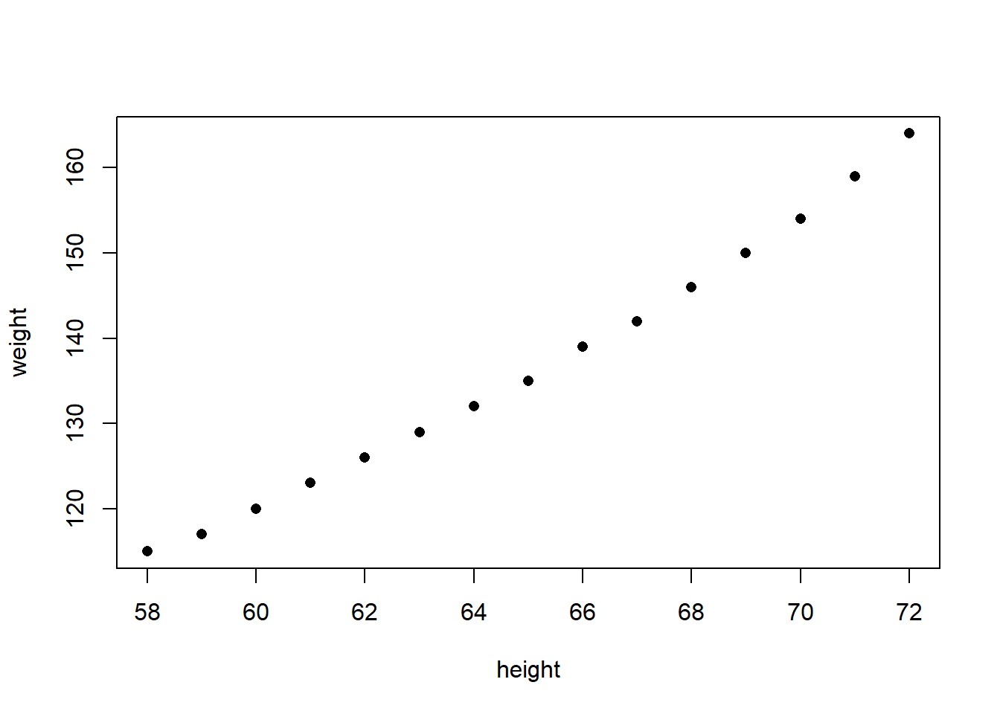
b) Le graphique montre qu’un modèle linéaire serait excellent. On estime les paramètres de ce modèle avec lm :
Code
(fit <- lm(weight ~ height, data = women))
Call:
lm(formula = weight ~ height, data = women)
Coefficients:
(Intercept) height
-87.52 3.45 c) Voir la figure 2.4.
Code
abline(fit)Code
plot(weight ~ height, data = women, pch = 16)
abline(fit)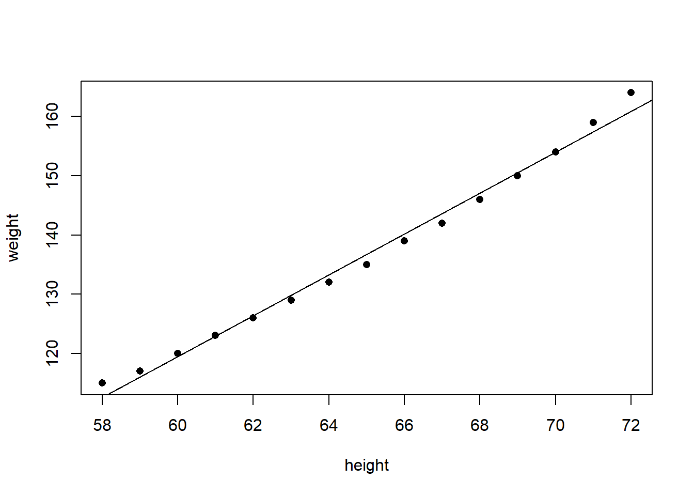
On constate que l’ajustement est excellent.
d) Le résultat de la fonction summary appliquée au modèle fit est le suivant:
Code
summary(fit)
Call:
lm(formula = weight ~ height, data = women)
Residuals:
Min 1Q Median 3Q Max
-1.7333 -1.1333 -0.3833 0.7417 3.1167
Coefficients:
Estimate Std. Error t value Pr(>|t|)
(Intercept) -87.51667 5.93694 -14.74 1.71e-09 ***
height 3.45000 0.09114 37.85 1.09e-14 ***
---
Signif. codes: 0 '***' 0.001 '**' 0.01 '*' 0.05 '.' 0.1 ' ' 1
Residual standard error: 1.525 on 13 degrees of freedom
Multiple R-squared: 0.991, Adjusted R-squared: 0.9903
F-statistic: 1433 on 1 and 13 DF, p-value: 1.091e-14Le coefficient de détermination est donc \(R^2 = 0.991\) %, ce qui est pès de 1 et confirme donc l’excellent ajustement du modèle évoqué en c).
e) On a
Code
attach(women)
SST <- sum((weight - mean(weight))^2)
SSR <- sum((fitted(fit) - mean(weight))^2)
SSE <- sum((weight - fitted(fit))^2)
all.equal(SST, SSR + SSE) [1] TRUECode
all.equal(summary(fit)$r.squared, SSR/SST) [1] TRUE2.17 Effet de transformations linéaires sur les estimateurs
Supposons que les observations \((x_1, Y_1), \dots, (x_n, Y_n)\) sont soumises à une transformation linéaire, c’est-à-dire que \(Y_i\) devient \(Y_i^\prime = a + b Y_i\) et que \(x_i\) devient \(x_i^\prime = c + d x_i\), \(i = 1, \dots, n\).
a) Trouver quel sera l’effet sur les estimateurs des moindres carrés des paramètres \(\beta_0\) et \(\beta_1\) dans le modèle de régression linéaire \(Y_i = \beta_0 + \beta_1 x_i + \varepsilon_i\).
b) Démontrer que le coefficient de détermination \(R^2\) n’est pas affecté par la transformation linéaire.
NoteÉléments de réponse
a) \(\hat{\beta}_1^\prime = (b/d) \hat{\beta}_1\)
AstuceSolution complète
a) Il faut exprimer \(\hat{\beta}_0^\prime\) et \(\hat{\beta}_1^\prime\) en fonction de \(\hat{\beta}_0\) et \(\hat{\beta}_1\). Pour ce faire, on trouve d’abord une expression pour chacun des éléments qui entrent dans la définition de \(\hat{\beta}_1^\prime\). Tout d’abord,
\[ \begin{aligned} \bar{x}^\prime &= \frac{1}{n} \sum_{i=1}^n x_i^\prime \\ &= \frac{1}{n} \sum_{i=1}^n (c + d x_i) \\ &= c + d \bar{x}, \end{aligned} \]
et, de manière similaire, \(\bar{Y}^\prime = a + b \bar{Y}\).
Ensuite,
\[ \begin{aligned} S_{xx}^\prime &= \sum_{i=1}^n (x_i^\prime - \bar{x}^\prime)^2 \\ &= \sum_{i=1}^n (c + d x_i - c - d \bar{x})^2 \\ &= d^2 S_{xx} \end{aligned} \]
et \(S_{yy}^\prime = b^2 S_{yy}\), \(S_{xy}^\prime = bd S_{xy}\).
Par conséquent, \[ \begin{aligned} \hat{\beta}_1^\prime &= \frac{S_{xy}^\prime}{S_{xx}^\prime} \\ &= \frac{bd S_{xy}}{d^2 S_{xx}} \\ &= \frac{b}{d} \hat{\beta}_1 \\ \end{aligned} \]
et
\[ \begin{aligned} \hat{\beta}_0^\prime &= \bar{Y}^\prime - \hat{\beta}_1^\prime \bar{x}^\prime \\ &= a + b \bar{Y} - \frac{b}{d} \hat{\beta}_1 (c + d \bar{x}) \\ &= a - \frac{bc}{d} \hat{\beta}_1 + b (\bar{Y} - \hat{\beta}_1 \bar{x}) \\ &= a - \frac{bc}{d} \hat{\beta}_1 + b \hat{\beta}_0. \end{aligned} \]
b) Tout d’abord, on établit que \[ \begin{aligned} R^2 &= \frac{\SSR}{\SST} \\ &= \frac{\sum_{i=1}^n (\hat{Y_i} - \bar{Y})^2}{\sum_{i=1}^n (Y_i - \bar{Y})^2} \\ &= \hat{\beta}_1^2 \frac{\sum_{i=1}^n (x_i - \bar{x})^2}{\sum_{i=1}^n (Y_i - \bar{Y})^2} \\ &= \hat{\beta}_1^2 \frac{S_{xx}}{S_{yy}}. \end{aligned} \] Maintenant, avec les résultats obtenus en a), on démontre directement que \[ \begin{aligned} (R^2)^\prime &= (\hat{\beta}_1^\prime)^2 \frac{S_{xx}^\prime}{S_{yy}^\prime} \\ &= \left( \frac{b}{d} \right)^2 \hat{\beta}_1^2 \frac{d^2 S_{xx}}{b^2 S_{yy}} \\ &= \hat{\beta}_1^2 \frac{S_{xx}}{S_{yy}} \\ &= R^2. \end{aligned} \]
2.18 Ajout d’un nouveau point
On sait depuis l’exercice 2.3 que pour le modèle de régression linéaire simple passant par l’origine \(Y_i = \beta x_i + \varepsilon_i\), l’estimateur des moindres carrés de \(\beta\) est
\[ \hat{\beta} = \frac{\sum_{i = 1}^n x_i Y_i}{\sum_{i = 1}^n x_i^2}. \] Démontrer que l’on peut obtenir ce résultat en utilisant la formule pour \(\hat{\beta}_1\) dans la régression linéaire simple usuelle (\(Y_i = \beta_0 + \beta_1 x_i + \varepsilon_i\)) en ayant d’abord soin d’ajouter aux données un \((n + 1)\)ème point \((m\bar{x}, m\bar{Y})\), où \[ m = \frac{n}{\sqrt{n + 1} - 1} = \frac{n}{a}. \]
AstuceSolution complète
Considérons un modèle de régression usuel avec l’ensemble de données \((x_1, Y_1), \dots, (x_n, Y_n), (m \bar{x}, m \bar{Y})\), où \(\bar{x} = n^{-1} \sum_{i = 1}^n x_i\), \(\bar{Y} = n^{-1} \sum_{i = 1}^n Y_i\), \(m = n/a\) et \(a = \sqrt{n + 1} - 1\). On définit \[ \begin{aligned} \bar{x}^\prime &= \frac{1}{n + 1} \sum_{i = 1}^{n + 1} x_i \\ &= \frac{1}{n + 1} \sum_{i = 1}^n x_i + \frac{m}{n + 1} \bar{x} \\ &= k \bar{x} \\ \end{aligned} \]
et, de manière similaire,
\[ \begin{aligned} \bar{Y}^\prime &= k \bar{Y}, \end{aligned} \]
où
\[ \begin{aligned} k &= \frac{n + m}{n + 1} \\ &= \frac{n (a + 1)}{a (n + 1)}. \end{aligned} \] L’expression pour l’estimateur des moindres carrés de la pente de la droite de régression pour cet ensemble de données est \[ \begin{aligned} \hat{\beta}_1 &= \frac{\sum_{i = 1}^{n + 1} x_i Y_i - (n + 1) \bar{x}^\prime \bar{Y}^\prime}{ \sum_{i = 1}^{n + 1} x_i^2 - (n + 1) (\bar{x}^\prime)^2} \\ &= \frac{\sum_{i = 1}^n x_i Y_i + m^2 \bar{x} \bar{Y} - (n + 1) k^2 \bar{x} \bar{Y}}{ \sum_{i = 1}^n x_i^2 + m^2 \bar{x}^2 - (n + 1) k^2 \bar{x}^2}. \end{aligned} \] Or, \[ \begin{aligned} m^2 - k^2 (n + 1) &= \frac{n^2}{a^2} - \frac{n^2 (a + 1)^2}{a^2 (n + 1)} \\ &= \frac{n^2 (n + 1) - n^2 (n + 1)}{a^2 (n + 1)} \\ &= 0. \end{aligned} \] Par conséquent, \[ \begin{aligned} \hat{\beta}_1 &= \frac{\sum_{i = 1}^n x_i Y_i}{\sum_{i = 1}^n x_i^2} \\ &= \hat{\beta}. \end{aligned} \] Interprétation : en ajoutant un point bien spécifique à n’importe quel ensemble de données, on peut s’assurer que la pente de la droite de régression sera la même que celle d’un modèle passant par l’origine. Voir les figures suivantes pour une illustration du phénomène.
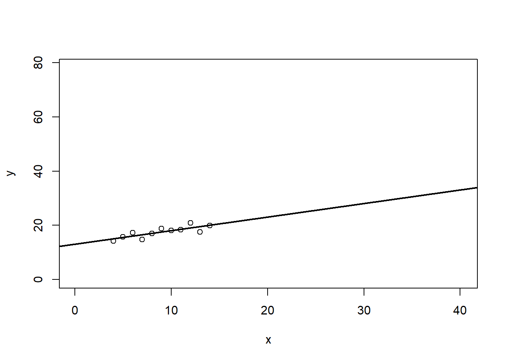
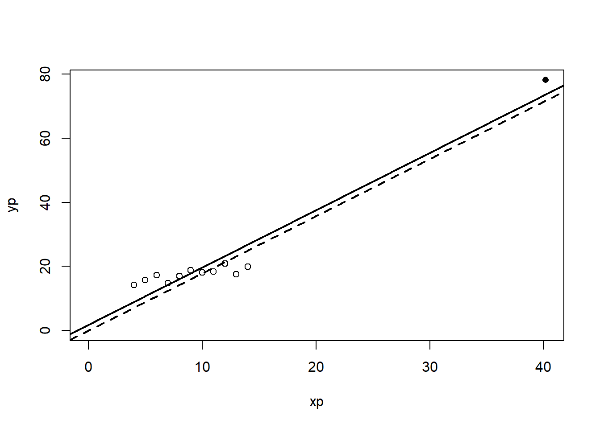
2.19 Marché immobilier dans la région métropolitaine de Boston
Le fichier house.dat contient diverses données relatives à la valeur des maisons dans la région métropolitaine de Boston. La signification des différentes variables se trouve dans le fichier. Comme l’ensemble de données est plutôt grand (506 observations pour chacune des 13 variables), répondre aux questions suivantes à l’aide de R.
a) Déterminer à l’aide de graphiques à laquelle des variables suivantes le prix médian des maisons (medv) est le plus susceptible d’être lié par une relation linéaire: le nombre moyen de pièces par immeuble (rm), la proportion d’immeubles construits avant 1940 (age), le taux de taxe foncière par 10000 $ d’évaluation (tax) ou le pourcentage de population sous le seuil de la pauvreté (lstat).
Astuce : en supposant que les données se trouvent dans le data frame house, essayer les commandes suivantes :
Code
plot(house)
attach(house)
plot(data.frame(rm, age, lstat, tax, medv))
detach(house)
plot(medv ~ rm + age + lstat + tax, data = house) b) Faire l’analyse complète de la régression entre le prix médian des maisons et la variable choisie en a), c’est-à-dire: calcul de la droite de régression, tests d’hypothèses sur les paramètres afin de savoir si la régression est significative, mesure de la qualité de l’ajustement et calcul de l’intervalle de confiance de la régression.
c) Répéter l’exercice en b) en utilisant une variable ayant été rejetée en a). Observer les différences dans les résultats.
AstuceSolution complète
a) Les données du fichier house.dat sont importées dans R avec la commande
Code
house <- read.table("house.dat", header = TRUE) Les figures suivantes contiennent les graphiques de medv en fonction de chacune des variables rm, age, lstat et tax. Le meilleur choix de variable explicative pour le prix médian semble être le nombre moyen de pièces par immeuble, rm.
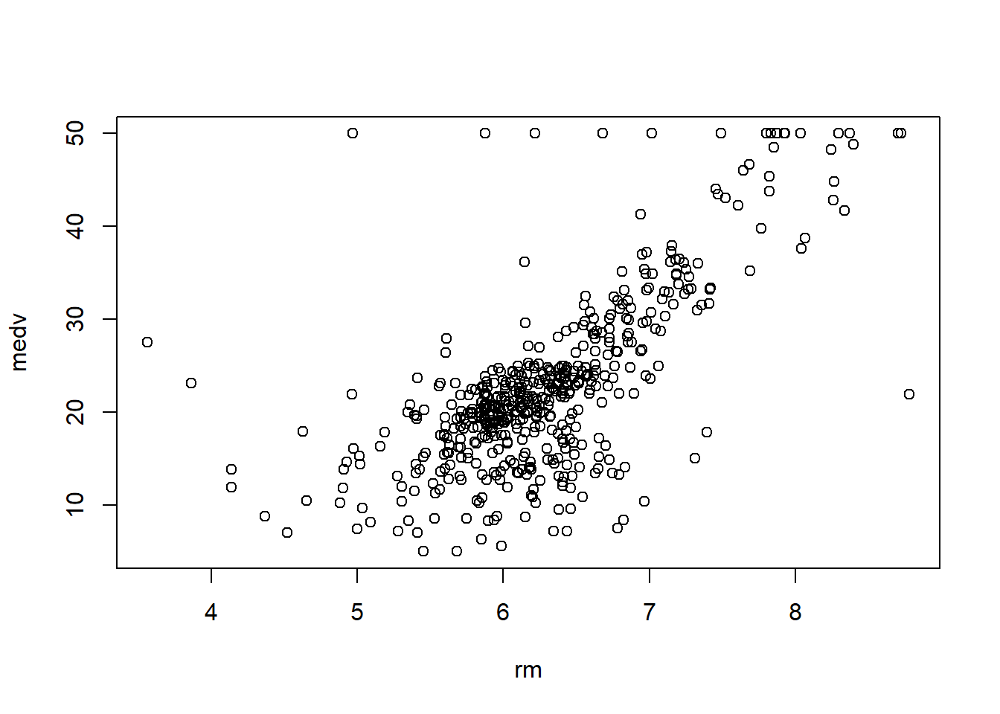
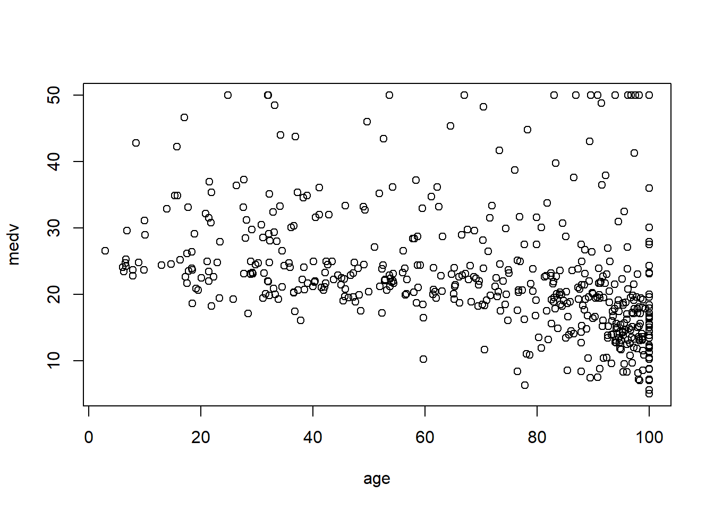
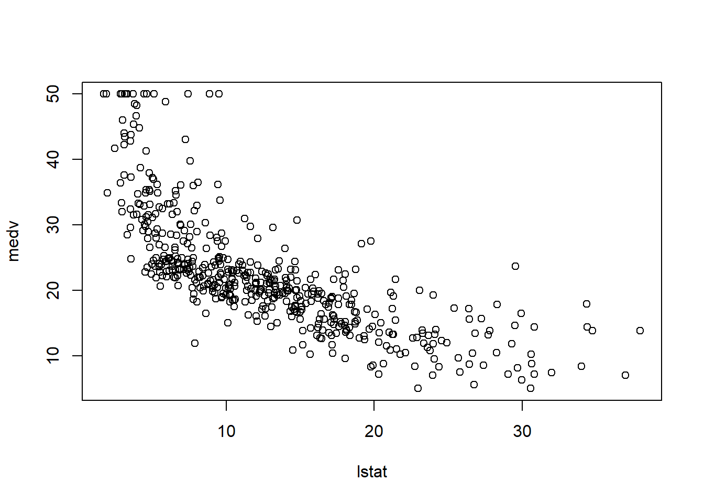
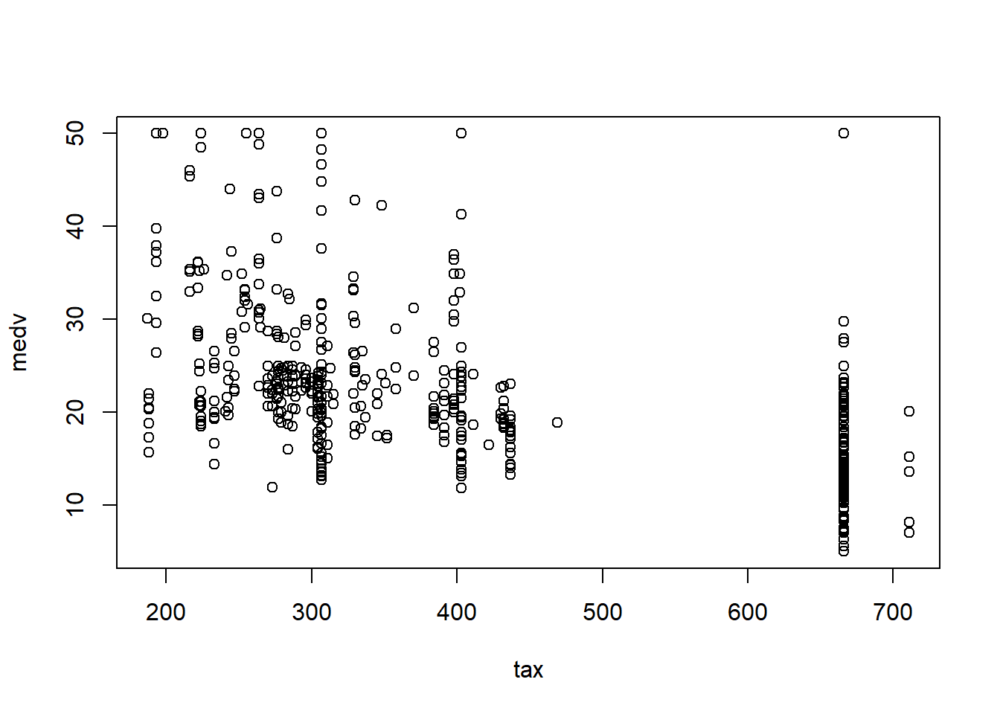
b) Les résultats ci-dessous ont été obtenus avec R.
Code
fit1 <- lm(medv ~ rm, data = house)
summary(fit1)
Call:
lm(formula = medv ~ rm, data = house)
Residuals:
Min 1Q Median 3Q Max
-23.346 -2.547 0.090 2.986 39.433
Coefficients:
Estimate Std. Error t value Pr(>|t|)
(Intercept) -34.671 2.650 -13.08 <2e-16 ***
rm 9.102 0.419 21.72 <2e-16 ***
---
Signif. codes: 0 '***' 0.001 '**' 0.01 '*' 0.05 '.' 0.1 ' ' 1
Residual standard error: 6.616 on 504 degrees of freedom
Multiple R-squared: 0.4835, Adjusted R-squared: 0.4825
F-statistic: 471.8 on 1 and 504 DF, p-value: < 2.2e-16On peut voir que tant l’ordonnée à l’origine que la pente sont très significativement différentes de zéro. La régression est donc elle-même significative. Cependant, le coefficient de détermination n’est que de \(R^2 = 0.4835\), ce qui indique que d’autres facteurs pourraient expliquer la variation dans medv.
On calcule les bornes de l’intervalle de confiance de la régression avec la fonction predict :
Code
pred.ci <- predict(fit1, interval = "confidence", level = 0.95)La droite de régression et ses bornes d’intervalle de confiance inférieure et supérieure sont illustrée à la figure 2.11.
Code
ord <- order(house$rm)
plot(medv ~ rm, data = house, ylim = range(pred.ci))
matplot(house$rm[ord], pred.ci[ord,],
type = "l", lty = c(1, 2, 2), lwd= 2,
col = "black", add = TRUE)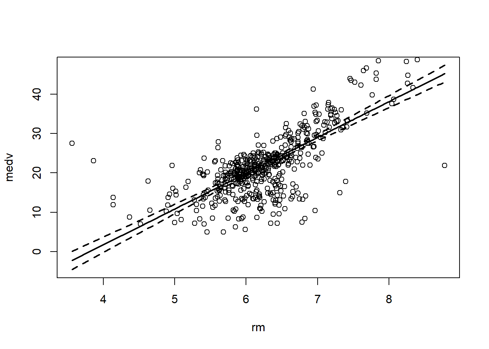
c) On reprend la même démarche, mais cette fois avec la variable age :
Code
fit2 <- lm(medv ~ age, data = house)
summary(fit2)
Call:
lm(formula = medv ~ age, data = house)
Residuals:
Min 1Q Median 3Q Max
-15.097 -5.138 -1.958 2.397 31.338
Coefficients:
Estimate Std. Error t value Pr(>|t|)
(Intercept) 30.97868 0.99911 31.006 <2e-16 ***
age -0.12316 0.01348 -9.137 <2e-16 ***
---
Signif. codes: 0 '***' 0.001 '**' 0.01 '*' 0.05 '.' 0.1 ' ' 1
Residual standard error: 8.527 on 504 degrees of freedom
Multiple R-squared: 0.1421, Adjusted R-squared: 0.1404
F-statistic: 83.48 on 1 and 504 DF, p-value: < 2.2e-16Code
pred.ci <- predict(fit2, interval = "confidence", level = 0.95) La régression est encore une fois très significative. Cependant, le \(R^2\) est encore plus faible qu’avec la variable rm. Les variables rm et age contribuent donc chacune à expliquer les variations de la variable medv (et rm mieux que age), mais aucune ne sait le faire seule de manière satisfaisante. La droite de régression et l’intervalle de confiance de celle-ci sont reproduits à la figure 2.12. On constate que l’intervalle de confiance est plus large qu’en b).
Code
ord <- order(house$age)
plot(medv ~ age, data = house, ylim = range(pred.ci))
matplot(house$age[ord], pred.ci[ord,],
type = "l", lty = c(1, 2, 2), lwd = 2,
col = "black", add = TRUE)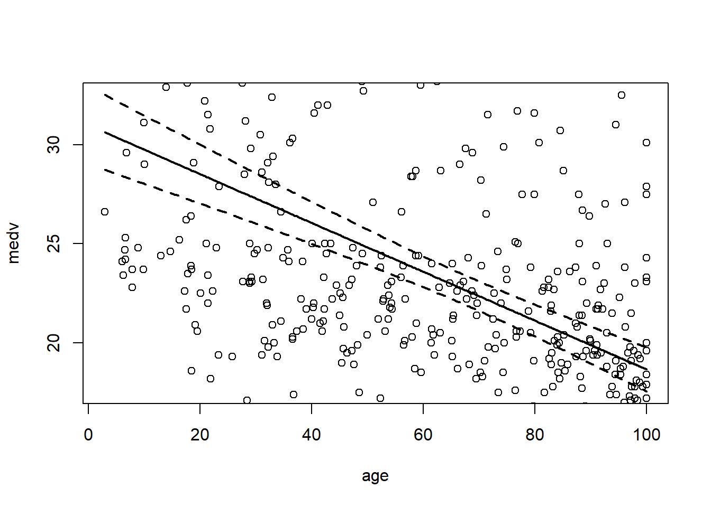
2.20 Consommation de carburant d’une automobile
On veut prévoir la consommation de carburant d’une automobile à partir de ses différentes caractéristiques physiques, notamment le type du moteur. Le fichier carburant.dat contient des données tirées de Consumer Reports pour 38 automobiles des années modèle 1978 et 1979. Les caractéristiques fournies sont
mpg: consommation de carburant en milles au gallon;nbcyl: nombre de cylindres (remarquer la forte représentation des 8 cylindres!);cylindree: cylindrée du moteur, en pouces cubes;cv: puissance en chevaux vapeurs;poids: poids de la voiture en milliers de livres.
Utiliser R pour faire l’analyse ci-dessous.
a) Convertir les données du fichier en unités métriques, le cas échéant. Par exemple, la consommation de carburant s’exprime en \(\ell/100\) km. Or, un gallon américain correspond à 3,785 litres et 1 mille à 1,6093 kilomètre. La consommation en litres aux 100 km s’obtient donc en divisant 235,1954 par la consommation en milles au gallon. De plus, 1 livre correspond à 0,45455 kilogramme.
b) Établir une relation entre la consommation de carburant d’une voiture et son poids. Vérifier la qualité de l’ajustement du modèle et si le modèle est significatif.
c) Trouver un intervalle de confiance à 95 % pour la consommation de carburant d’une voiture de 1350 kg.
NoteÉléments de réponse
b) \(R^2 = 0.858\) et \(F = 217.5093\)
c) \(10.5669 \pm 2.135\)
AstuceSolution complète
a) On importe les données dans R, puis on effectue les conversions demandées. La variable consommation contient la consommation des voitures en \(\ell/100\) km et la variable poids le poids en kilogrammes.
Code
carburant <- read.table("carburant.dat", header = TRUE)
consommation <- 235.1954/carburant$mpg
poids <- carburant$poids * 0.45455 * 1000 b) La fonction summary fournit l’information essentielle pour juger de la validité et de la qualité du modèle :
Code
fit <- lm(consommation ~ poids)
summary(fit)
Call:
lm(formula = consommation ~ poids)
Residuals:
Min 1Q Median 3Q Max
-2.07123 -0.68380 0.01488 0.44802 2.66234
Coefficients:
Estimate Std. Error t value Pr(>|t|)
(Intercept) -0.0146530 0.7118445 -0.021 0.984
poids 0.0078382 0.0005315 14.748 <2e-16 ***
---
Signif. codes: 0 '***' 0.001 '**' 0.01 '*' 0.05 '.' 0.1 ' ' 1
Residual standard error: 1.039 on 36 degrees of freedom
Multiple R-squared: 0.858, Adjusted R-squared: 0.854
F-statistic: 217.5 on 1 and 36 DF, p-value: < 2.2e-16Le modèle est donc le suivant : \(Y_i = -0.0147 + 0.0078 x_i + \varepsilon_i\), \(\varepsilon_i \sim N(0, 1.0387^2)\), où \(Y_i\) est la consommation en litres aux 100 kilomètres et \(x_i\) le poids en kilogrammes. La faible valeur \(p\) du test \(F\) indique une régression très significative. De plus, le \(R^2\) de 0.858 confirme que l’ajustement du modèle est assez bon.
c) On veut calculer un intervalle de confiance pour la consommation en carburant prévue d’une voiture de 1350 kg. On obtient, avec la fonction predict :
Code
predict(fit, newdata = data.frame(poids = 1350), interval = "prediction") fit lwr upr
1 10.5669 8.432089 12.70172.21 Transformation pour régler un problème d’hétéroscedasticité
Dans un graphiques des résidus en fonction des valeurs prédites, on observe de l’hétéroscédasticité. Après une analyse plus poussée, on note que la variance de \(\hat{\varepsilon}_i\) est approximativement proportionnelle à \(E[Y_i]^4\) . Proposer une transformation \(g\) de la variable réponse qui permettra de stabiliser la variance.
AstuceSolution complète
Utiliser l’approximation de Taylor de premier ordre pour montrer que la variance de \(g(Y)=1/Y\) est approximativement constante.
2.22 Population bactérienne
Les données suivantes présentent le nombre moyen de bactéries vivantes dans une boîte de conserve de nourriture et le temps (en minutes) d’exposition à une chaleur de \(300^{o}\)F.
| Nombre.de.bactéries | Temps.d.exposition..min. |
|---|---|
| 175 | 1 |
| 108 | 2 |
| 95 | 3 |
| 82 | 4 |
| 71 | 5 |
| 50 | 6 |
| 49 | 7 |
| 31 | 8 |
| 28 | 9 |
| 17 | 10 |
| 16 | 11 |
| 11 | 12 |
a) Tracer un nuage de points des données. Est-ce qu’un modèle de régression linéaire semble adéquat?
b) Ajuster aux données un modèle de régression linéaire. Calculer les statistiques sommaires et produire les graphiques de résidus. Interpréter les résultats. Quelles sont vos conclusions par rapport à la validité du modèle de régression?
c) Identifier une transformation pour ces données afin d’utiliser adéquatement les méthodes de régression. Ajuster ce nouveau modèle et tester la validité de la régression.
AstuceSolution complète
a) La figure 2.13 montre le nuage de points du nombre de bactéries en fonction du temps d’exposition en minutes. Le graphique montre qu’une ligne droite pourrait être un modèle raisonnable, mais un meilleur modèle pourrait capter la courbe. En fait, le graphique montre que, lorsque la nourriture en canne est exposée à une température de \(300^{o}\) F pour une longue période, il n’y a pas de bactérie restante. Cela suggère qu’un modèle qui capture le comportement asymptotique du nombre de bactéries quand le nombre de minutes d’exposition augmente serait meilleur. Un modèle linéaire continuerait de faire diminuer le nombre de bactéries, menant éventuellement à des valeurs négatives (ce qui n’a pas de sens dans le contexte).
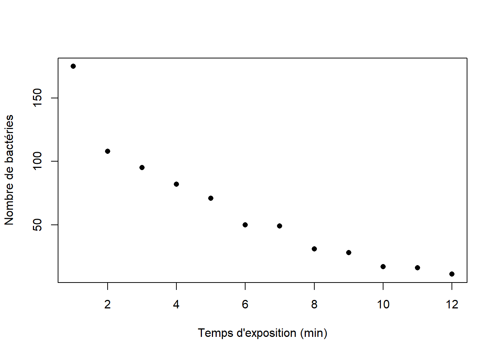
b) On ajuste un modèle linéaire simple avec les données en R. Le sommaire du modèle est le suivant :
Code
fit1 <- lm(bact ~ min)
summary(fit1)
Call:
lm(formula = bact ~ min)
Residuals:
Min 1Q Median 3Q Max
-17.323 -9.890 -7.323 2.463 45.282
Coefficients:
Estimate Std. Error t value Pr(>|t|)
(Intercept) 142.20 11.26 12.627 1.81e-07 ***
min -12.48 1.53 -8.155 9.94e-06 ***
---
Signif. codes: 0 '***' 0.001 '**' 0.01 '*' 0.05 '.' 0.1 ' ' 1
Residual standard error: 18.3 on 10 degrees of freedom
Multiple R-squared: 0.8693, Adjusted R-squared: 0.8562
F-statistic: 66.51 on 1 and 10 DF, p-value: 9.944e-06Le modèle ajusté est \[ \hat{y}=142.20-12.48x, \] où le modèle est estimé avec les BLUE. Le tableau d’analyse de variance est obtenu avec R :
Code
anova(fit1) Analysis of Variance Table
Response: bact
Df Sum Sq Mean Sq F value Pr(>F)
min 1 22268.8 22268.8 66.512 9.944e-06 ***
Residuals 10 3348.1 334.8
---
Signif. codes: 0 '***' 0.001 '**' 0.01 '*' 0.05 '.' 0.1 ' ' 1Pour tester la significativité du modèle de régression, on utilise la statistique F. Elle prend un valeur de 66.512 et a 1 et 10 degrés de liberté, ce qui mène à un seuil observé de \[ P[F_{(1,10)}>66.512]=9.944\times10^{-6} . \] Comme le seuil observé est plus petit que 1 %, le modèle de régression linéaire simple est globalement significatif.
La valeur du \(R^2\) est 0.8693. Cela est un coefficient de détermination élevé, ce qui signifie qu’environ 87 % de la variation dans le nombre de bactéries dans la nourriture en cannes est expliquée par les minutes d’exposition à plus de \(300^{o}\)F. Ce modèle semble bien performé.
Le diagramme quantile-quantile des résidus studentiszés est présenté à la figure 2.14. La ligne représente le moment où les quantiles empiriques sont égaux aux quantiles normaux standards. Le postulat de normalité est sérieusement violé parce que les points ne font clairement pas une ligne droite. Cela signifie qu’il y a de nombreux problèmes dans le modèle, incluant le fait que les tests d’hypothèse ne seront pas vrais.
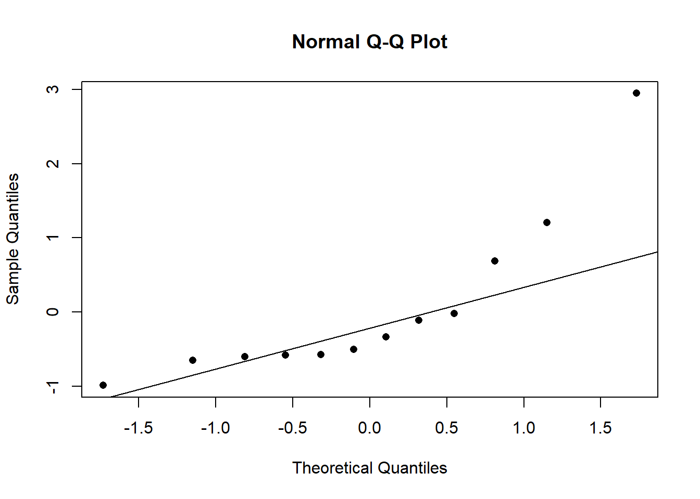
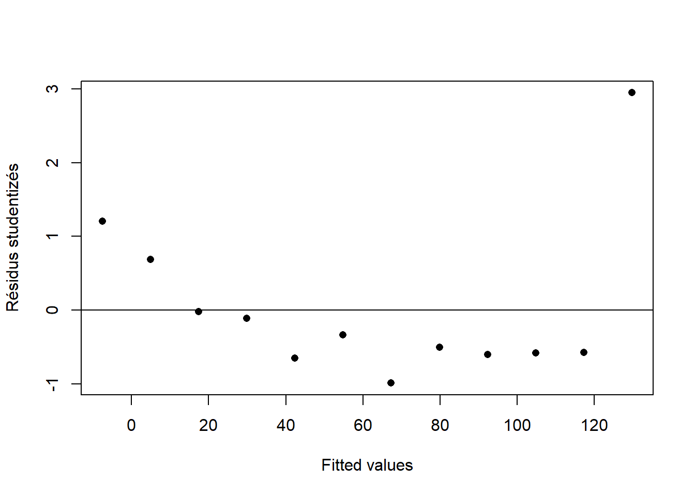
La figure 2.15 montre le nuage de points des résidus studentisés en fonction des valeurs ajustées. Le nuage de points suggère une courbe, ce qui est un indicateur de non-linéarité. Cela rejoint les commentaires précédents.
Finalement, le modèle n’est pas adéquat et la variable réponse doit être transformée.
c) On utilise la méthode Box-Cox pour déterminer la transformation optimale. La figure suivante montre le graphique de la log-vraisemblance en fonction de \(\lambda\) pour deux différents intervalles :
Code
boxcox(bact~min, lambda = seq(-2, 2, len = 20), plotit = TRUE)
boxcox(bact~min, lambda = seq(-0.2, 0.5, len = 20), plotit = TRUE)Warning: package 'MASS' was built under R version 4.5.3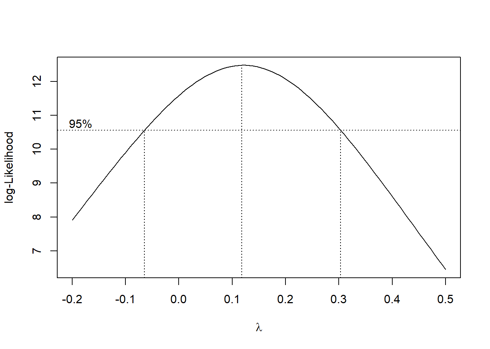
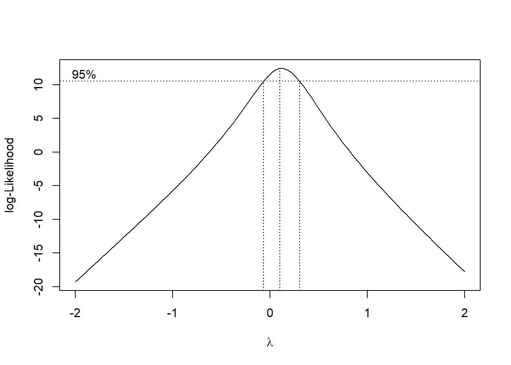
Le maximum est autour de 0.1 et 0, inclus dans l’intervalle de confiance à 95 % pour \(\lambda\). Ainsi, il est préférable d’utilise 0 comme une transformation commune (logarithmique). Posons \(y^{*}=\ln(y)\). Le modèle de régression linéaire simple est ajusté aux données transformées. On obtient :
Code
logbact <- log(bact)
fit2 <- lm(logbact~min)
summary(fit2)
Call:
lm(formula = logbact ~ min)
Residuals:
Min 1Q Median 3Q Max
-0.184303 -0.083994 0.001453 0.072825 0.206246
Coefficients:
Estimate Std. Error t value Pr(>|t|)
(Intercept) 5.33878 0.07409 72.05 6.47e-15 ***
min -0.23617 0.01007 -23.46 4.49e-10 ***
---
Signif. codes: 0 '***' 0.001 '**' 0.01 '*' 0.05 '.' 0.1 ' ' 1
Residual standard error: 0.1204 on 10 degrees of freedom
Multiple R-squared: 0.9822, Adjusted R-squared: 0.9804
F-statistic: 550.3 on 1 and 10 DF, p-value: 4.489e-10Le modèle ajusté est \[ \hat{y}^{*}=5.33878-0.23617x, \] où les paramètres du modèle sont estimés avec les BLUE. La figure 2.18 est un nuage de points de la variable réponse transformée en fonction de la variable explicative. La relation est beaucoup plus linéaire.
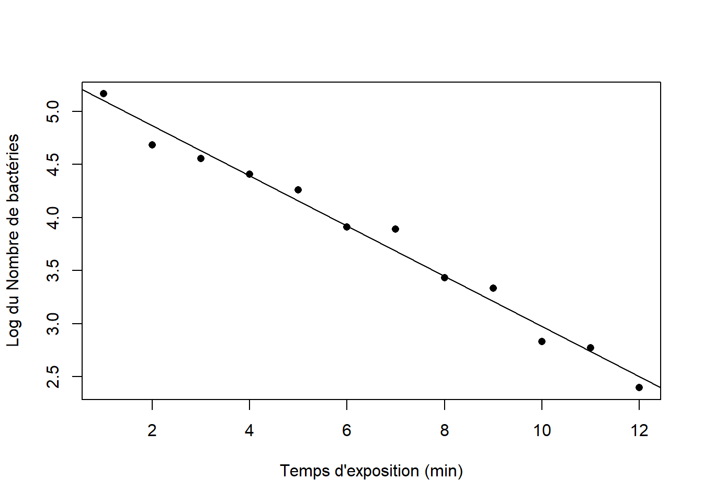
Le tableau d’analyse de variance est obtenu avec
Code
anova(fit2)Analysis of Variance Table
Response: logbact
Df Sum Sq Mean Sq F value Pr(>F)
min 1 7.9761 7.9761 550.33 4.489e-10 ***
Residuals 10 0.1449 0.0145
---
Signif. codes: 0 '***' 0.001 '**' 0.01 '*' 0.05 '.' 0.1 ' ' 1La statistique F pour la validité globale de la régression est 550.33 et il y a 1 et 10 degrés de liberté. Le seuil observé est donc
\[ P[F_{(1,10)}>550.33]= 4.489\times10^{-10}. \] Comme le seuil observé est beaucoup plus petit que 1 %, il y a assez de preuves pour rejeter l’hypothèse nulle selon laquelle \(\beta_{1}=0\) au niveau 1%. Le modèle est siginificatif globalement.
La valeur de \(R^2\) est très élevée à 0.9822. Cela signifie que 98 % de la variance dans le logarithme du nombre de bactéries est expliquée par le temps d’exposition à la haute température. Le modèle semble bien performer contrairement à avant.
Le diagramme quantile-quantile des résidus standardizés est à la figure 2.19. Les points sont bien alignés avec les quantiles normaux et le postulat de normalité semble approprié.
La figure 2.20 montre un nuage de points des résidus studentizés en fonction des valeurs ajustées. Les points sont contenus dans des bandes horizontales et semblent uniformément distribués.
Finalement, le modèle est adéquat et la transformation de la variable réponse a réglé les problèmes.
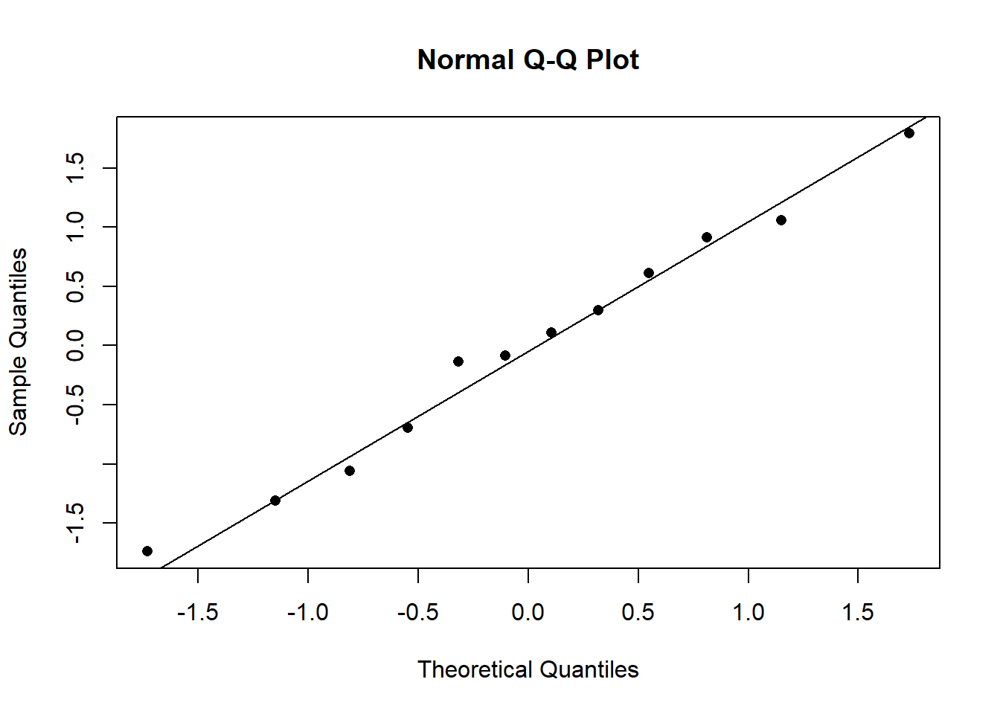
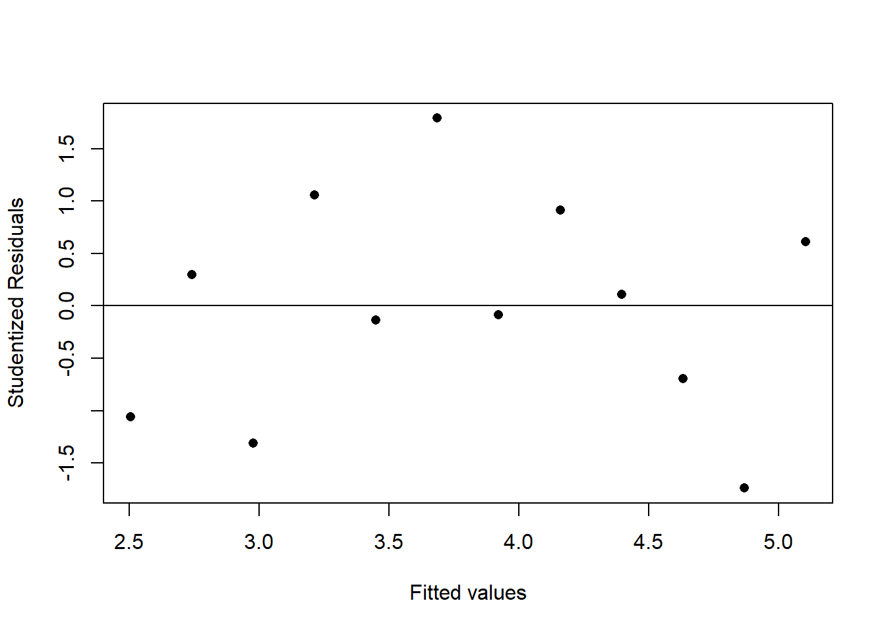